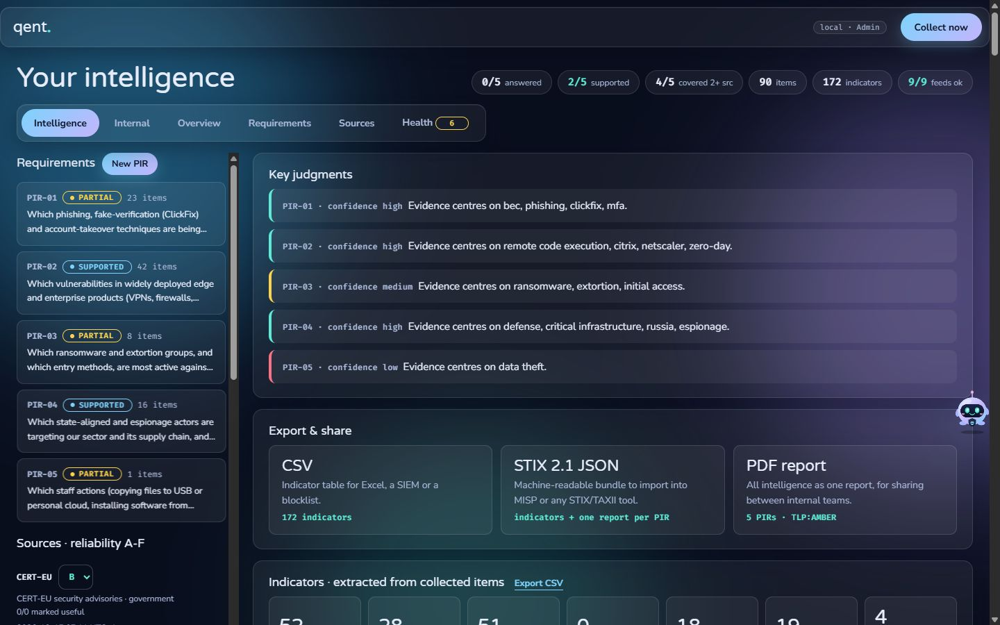
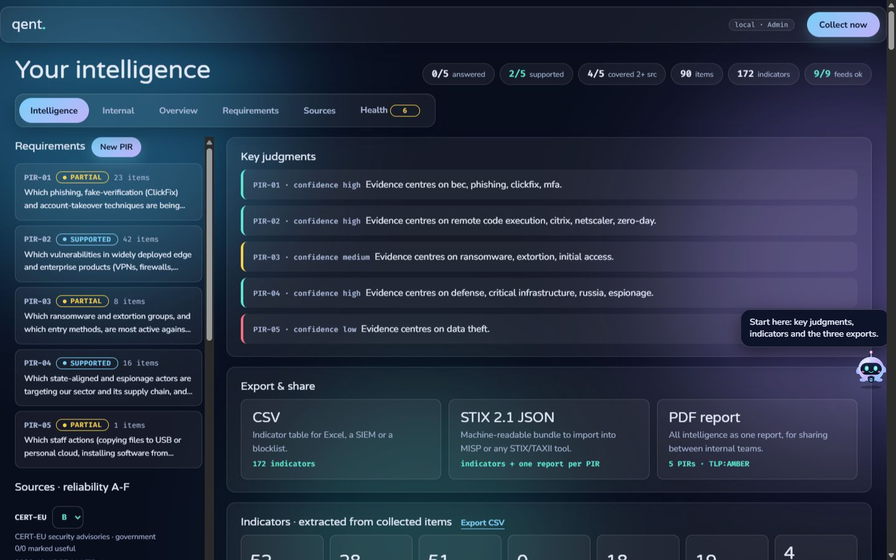
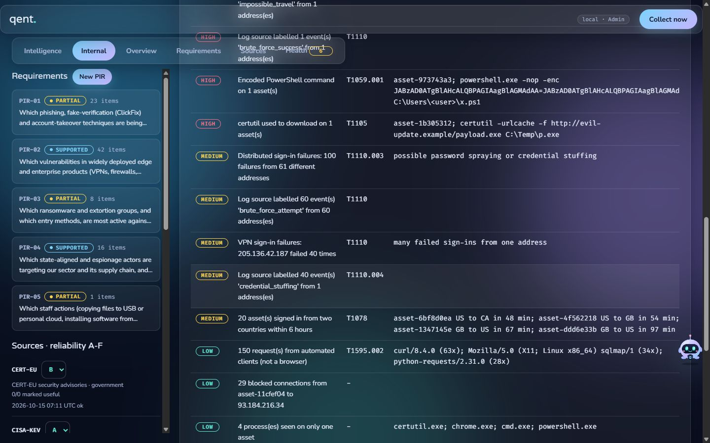

Qent starts from written intelligence requirements, keeps only what matches, adds evidence from your own logs, and says how sure it is.
Try it in 2 minutesRead the walkthroughItems from the feeds in one run. Only about 90 touch one of five PIRs.
Nobody can say a question is answered until an analyst confirms it.
A feed fails or goes quiet and nobody notices. Qent's Health tab does.
An item is kept only for a PIR its source is tasked to and whose keywords it hits, newer than 30 days.
CVEs, IPs, hashes, URLs, domains, ATT&CK techniques and actors, defanged forms included.
Sources graded A to F. Confidence is the number of independent sources, never a guess.
OPEN, PARTIAL, SUPPORTED (2+ sources and a strong item), ANSWERED (analyst confirmed).


| ID | Question | Level |
|---|---|---|
| PIR-01 | Which phishing, ClickFix and account-takeover techniques are being used against cloud and email accounts right now, and which controls stop them? | tactical |
| PIR-02 | Which vulnerabilities in widely deployed edge and enterprise products (VPNs, firewalls, gateways, load balancers, mail servers, operating systems) are exploited now, and which need patching within a day? | tactical |
| PIR-03 | Which ransomware and extortion groups, and which entry methods, are most active against organisations like ours, and what do they reach first? | strategic |
| PIR-04 | Which state-aligned and espionage actors target our sector and its supply chain, and through which suppliers or partners? | strategic |
| PIR-05 | Which staff actions (USB or personal-cloud copies, untrusted installers) put company data at risk, and by which routes does it leave? | tactical |
Drop a firewall, VPN or endpoint CSV. Usernames are dropped, internal hosts become pseudonyms, commands are redacted, rows expire after 30 days. Findings are rule-based and mapped to MITRE ATT&CK. No AI ever sees your logs.

Port scans, brute force and success after failures, beaconing, encoded PowerShell, certutil abuse, Fortinet / Citrix / Ivanti / Cisco exploit probes, scanner clients, impossible travel. Then sightings against your feeds and MISP, and sharing as STIX 2.1, CSV, TAXII 2.1 or a MISP push, scrubbed of internal identifiers.
git clone https://github.com/idiljot-singh/Qent.git cd Qent pip install openpyxl # only for the first-start PIR import python qent.py # http://localhost:8080
Press Collect now, open the Requirements tab, then drop samples/ssl_vpn_logs.csv on the Internal tab. Python 3.12+, standard library only.